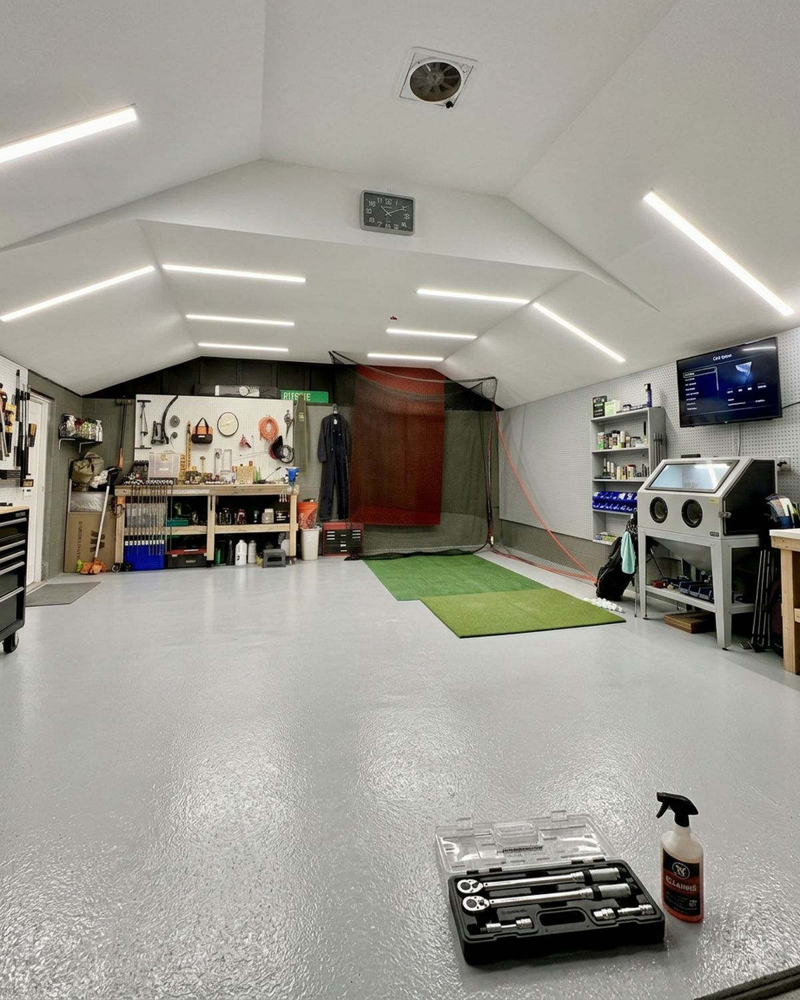
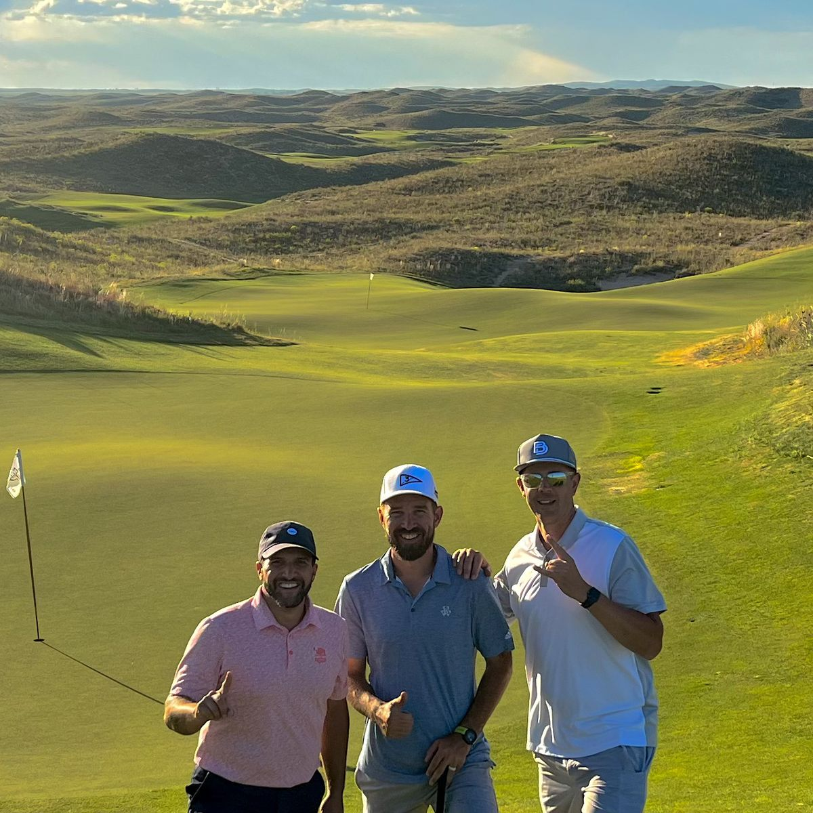
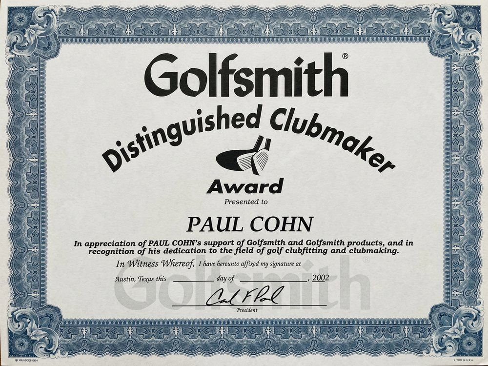
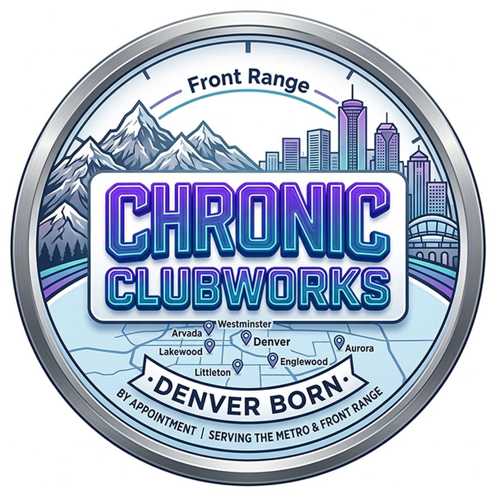

About
Just a bunch of dudes
who love golf.
A brotherhood of golf obsessives with decades of camaraderie, competition and tinkering behind them.

- LocationDenver metro
- Hours8:00am – 5:00pm
- TurnaroundMost work in days
- Service areaDenver & Front Range
The story
How we got here.
Chronic Clubworks started the way most good things do — a group of friends who couldn't stop tinkering.
Decades of camaraderie, competition and a shared love for golf turned into a workbench, then a shop, then a habit of building clubs for anyone who asked. What began as fixing each other's gear became something people started paying us for.
We're not just slapping grips and gluing heads. We're artists, tinkerers and golf junkies who know the right setup can turn a hack into a hero. Between us there's over 150 combined years behind the bench, and we work with golfers at every level — from people breaking 100 for the first time to players who know their exact swing weight.

How we work
What you can expect.
We measure everything
Lofts, lies and swing weights get checked and recorded before and after — not eyeballed. You get the numbers.
You talk to the builder
No intake counter, no handoff to a back room. The person who quotes your job is the person who does it.
Quoted before we start
Send photos, get a firm number and a timeline. Nothing gets ordered or altered until you've said yes.
Honest advice
If a repair costs more than the club is worth, we'll say so. We'd rather lose the job than sell you something pointless.
Credentials
Distinguished Clubmaker.
Paul Cohn holds the Golfsmith Distinguished Clubmaker Award, presented in recognition of his contribution to golf clubfitting and clubmaking.
It's a small thing to hang on a wall and a big thing to have behind your bag. Clubmaking isn't licensed — anyone can pull a shaft and call it a service. Formal recognition from Golfsmith, one of the industry's original clubmaking institutions, means the work has been measured against a real standard.
{kind=link}

Where we are
Denver born.
We work out of the Denver metro by appointment, serving Denver, Lakewood, Arvada, Westminster, Littleton, Englewood, Aurora and the wider Front Range.
Golf at altitude is its own thing. The ball carries further than any sea-level yardage chart suggests, which quietly compresses the gaps between your clubs and makes proper gapping matter more here than almost anywhere else. We build and spec for the courses you actually play.
- Phone(720) 854-4132
- Emailinfo@tcclubworks.io
- Hours8:00am – 5:00pm, by appointment
- Instagram@tc_clubworks
